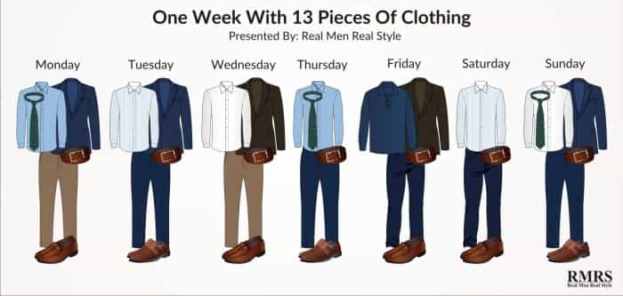
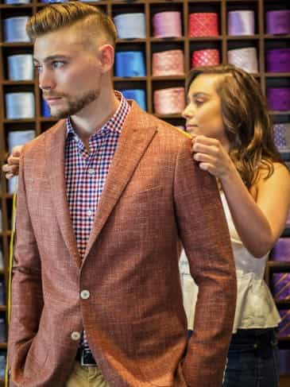
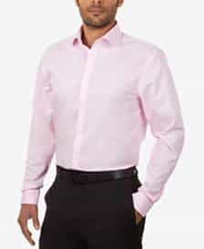
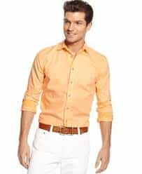
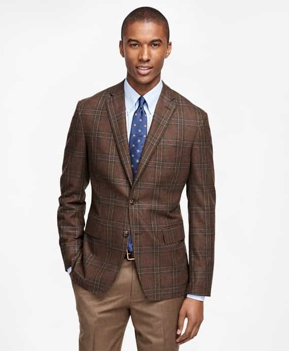
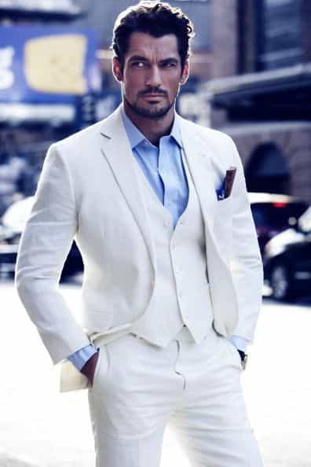
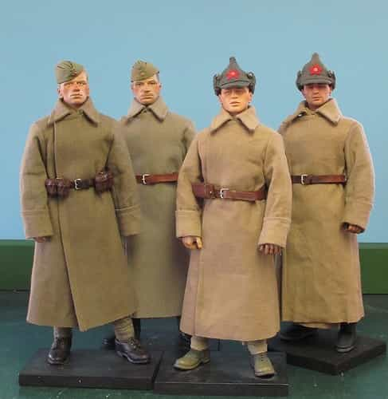

Previously, I had done an article on the very basics of men’s fashion and style, discussing the principles of color contrast, fit, and matching the clothing to the setting. And those alone will enable you to dress better than the overwhelming majority of the shuffling biped bovines that represent modern humanity. But if you really want to dress good, in contexts both formal and casual and everything in between, you’re going to have to undergo more in-depth study of the matter. And in my opinion the most important concept to learn for true knowledge of couture is that of interchangeability.

What Is Interchangeability?
Interchangeability is, I freely admit, not a concept that I came up with. We are all “standing on the shoulders of giants” who have already done much of the theoretical “heavy lifting”, and thus we can learn from those who came before us rather than constantly reinventing the wheel. And in this case I learned from Antonio Centeno who also maintains his own website at A Tailored Suit, which is where I gleaned a good amount of my fashion knowledge.
Interchangeability is the idea that, instead of having a million different individual articles of clothing, you have a relative few articles of clothing that can be switched and swapped with each other depending on the occasion or event you are entering. With interchangeable clothes, you have limitless options for outfits depending on the weather, season, and level of formality and gravity of a day.

His terrible haircut aside, this outfit can be easily dressed up or down with the addition of a tie and fully buttoning the shirt, or removal of the jacket., respectively.
When you become fluent at interchanging articles of clothing for different occasions, you open yourself up to limitless options to make the most out of your dress shirts, ties, pants, suits, jackets, and shoes, even if your quantity of outfits is limited (and I advocate that it should be, because I’m not into the whole “spending money” thing).
You want to arrange your wardrobe to maximize interchangeability. A rule of thumb for thinking about this is that you want clothes that can be aesthetically fitting in various ensembles in the greatest variety of weather and situations.

A neutral colored shirt like this is interchangeable in a wide variety of situations

Whereas pastels and light trousers like this are less so. These are best worn in the summer only.
How To Be Interchangeable
Why do you think white dress shirts are the go-to shirt? Because it has neutral colors and is thus interchangeable with many sorts of other articles of clothing.
Similarly, you want to begin building your wardrobe with the old reliable standbys such as brown sports coats, black trousers, and navy suits: neutral colors that allow you to mix and match without spending a lot of money.

A classic example of neutral colors working well together
Bear in mind of course that these are just suggestions, interchangeability doesn’t have to be merely earth tones and dark suits—I am a man who wears a white suit on fairly regular occasions in the summer, to cite one example previously discussed, and for lighter fabrics and colors the white jacket and slacks are made very interchangeable indeed.

Another thing to bear in mind is fabric weight/warmth: medium weight fabrics are the most fashionable, due to the same principle of interchangeability. For example, a medium sweater is better–which is to say more fashionable—than a heavy sweater (in terms of aesthetics) because it can be worn in more seasons and weathers and it will likely present that always desirable streamlined silhouette, whereas a heavy sweater is bulky and can only be worn in the coldest weather. Of course, when practicality is needed, fashion standards can be loosened.

Sure there are more stylish overcoats you can wear, but when your life is at stake, you forgo fashion.
Incorporate your style into the interchangeable wardrobe. The “moderate pieces” are often kind of muted and neutral in color and pattern, so you have to make them shine by combining them with other pieces. The best way to observe this is to, what else, look in a mirror.
When experimenting with interchangeability, you have to balance between “classic style” and your own personal style, which is to say whatever image you wish to convey for yourself. Moderation is the key-if you’re too classic, you look generic. If you’re too personal, you look contrived and unnatural.
Then, once you’ve begun to build a wardrobe, you can begin experimenting with bolder colors and patterns. Remember the discussion of contrasts that I discussed in the first fashion article I wrote: the colors have to work for YOU, not anyone else. Whatever it is you’re endeavoring to do, in order to bend the rules, you must first learn the rules. And THEN you can experiment.
Read More: How To Dress Stylishly In Hot Weather